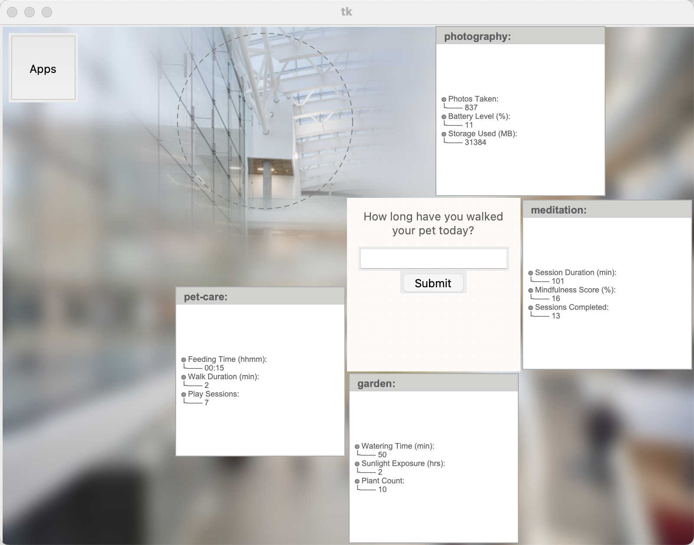
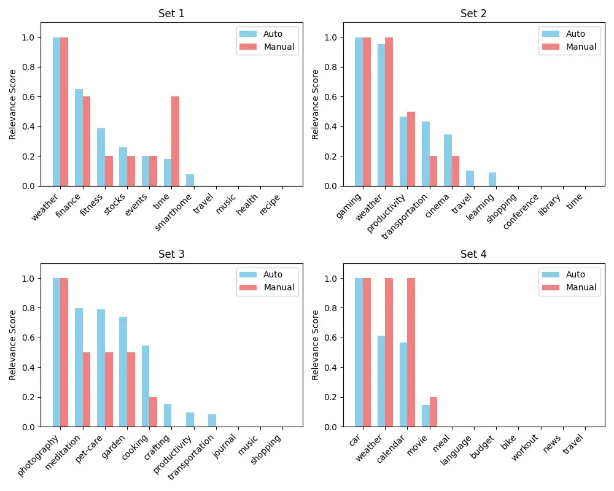
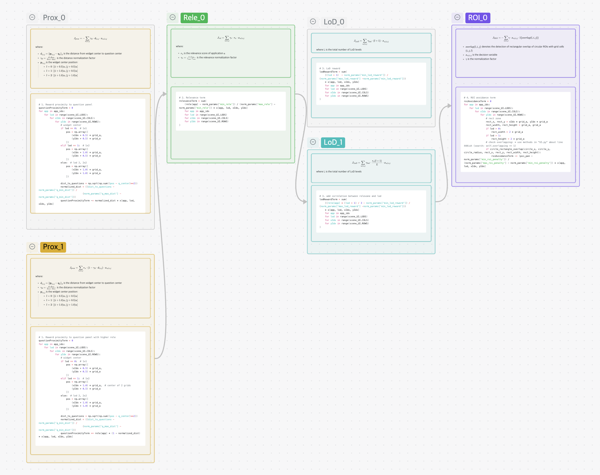
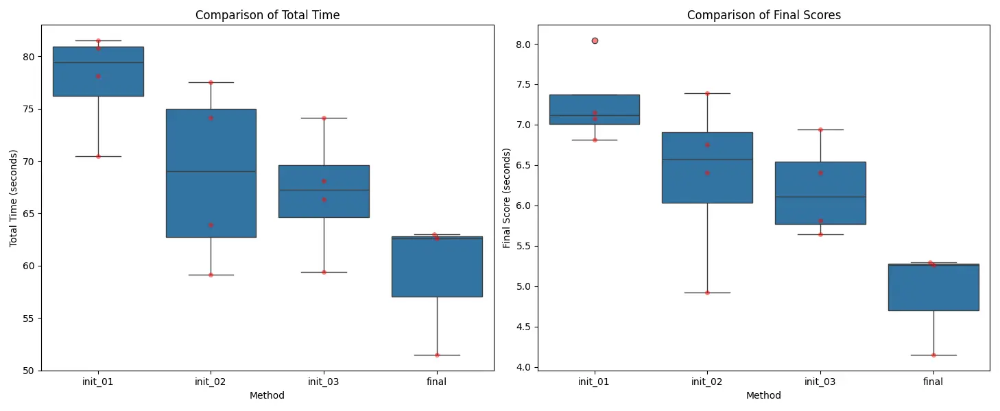

Augmented Reality promises to transform how we interact with digital information. Through blending virtual interface elements into our physical environment, it enables a range of applications from in situ displays of task instructions for training purposes to immersive educational experiences. However, placing interface elements within our physical world also makes designing AR applications incredibly difficult as they should be “context-sensitive”. For the lack of words, the “goodness” of interface designs now depends on the environmental conditions (e.g., what objects are around the user) as well as external (e.g., task) and internal (e.g., cognitive load) states. Hence, UI decisions can no longer be set deterministically at design time, but adapt according to their context of use at runtime.
In this project which mimics the AR context in a low-fidelity prototype in python, I aim to present the application widgets more effectively using an optimization-based approach, taking into account:
〓 Constraints to make the UI placement looks normal: - Non-overlap - Place <= 4 elements - Single placement per app
〓 Objectives to help users to efficiently find the information they need: - Proximity to the starting point - App relevance to the question - LoD (Levels of Details) of each widget - ROI (Region of Interest) of the scene
Gurobipy is used to solve the optimization problem.
Each widget has 3 levels of details (LoD), and the size of the widget is determined by the LoD.

Binary variable indicating whether app a is placed at grid position (i,j) with LoD
xa, l, i, j ∈ {0, 1}
xa, l, i, j = 0,‚Ää‚ÄÅ‚àÄ(i, j)‚ÄÑ‚àà‚ÄÑùí™ - where ùí™ is the set of positions that overlap with the question panel or Apps button
∑a, l, i, jxa, l, i, j ≤ 4
∀a : ∑l, i, jxa, l, i, j ≤ 1
$$ \sum_{a} ( x_{a,0,i,j} + \sum_{i'=i-1}^i x_{a,1,i',j} + \sum_{i'=i-1}^i \sum_{j'=j-1}^j x_{a,2,i',j'} ) \leq 1, \quad \forall i,j $$
### in the loop ##
pos = np.array([xIdx*info["block_size"], yIdx*info["block_size"]])
# Check overlap with questions panel
# Check overlap with Apps buttonpositions list is categorized and iterated
through for widgets with various LoDs.### in the loop ##
positions = []
if lod == 0:
positions = [(xIdx, yIdx)]
elif lod == 1:
positions = [(xIdx, yIdx), (xIdx+1, yIdx)]
elif lod == 2:
positions = [(xIdx, yIdx), (xIdx+1, yIdx),(xIdx, yIdx+1), (xIdx+1, yIdx+1)]
for pos_x, pos_y in positions:
pos = np.array([pos_x*grid_a, pos_y*grid_a])
# Check overlap with questions panel
# Check overlap with Apps buttonAfter the iteration and test before, I got 1 base initial formulations “Initial Formulation A”, and developed 2 variants of it, including “Initial Formulation B” and “Initial Formulation C”. Basically, for the 4 terms in objective function, I change the way to calculate some of them and apply to the original formulation to check if that can make sense.
For example, for the first term Jprox, I developed an alternative way to formulate it and name it “1” to distinguish it from the original method in the base initial formulation A, and applied it to formulation B. So the Formulation B is coded as “1000”

$$ \begin{align*} \max_{x} \quad & w_{prox}J_{prox} + w_{rel}J_{rel} + w_{lod}J_{LoD} + w_{roi}J_{ROI} \\newline \text{where:} \newline J_{prox} &= -\sum_{a,l,i,j} \gamma_d \cdot d_{l,i,j} \cdot x_{a,l,i,j} \\newline J_{rel} &= \sum_{a,l,i,j} \gamma_r \cdot r_a \cdot x_{a,l,i,j} \\newline J_{LoD} &= \sum_{a,l,i,j} \gamma_{lod} \cdot (l + 1) \cdot x_{a,l,i,j} \\newline J_{ROI} &= -\sum_{a,l,i,j} \gamma_{roi} \cdot x_{a,l,i,j} \cdot \mathbb{I}\{overlap(l,i,j)\} \end{align*} $$
Jprox = −∑a, l, i, jγd ⋅ dl, i, j ⋅ xa, l, i, j
where: - dl, i, j = ∥pl, i, j − qc∥2 is the distance from widget center to question center - $\gamma_d = \frac{d - d_{min}}{d_{max} - d_{min}}$ is the distance normalization factor - pl, i, j is the widget center position: - l = 0: [(i + 0.5)a, (j + 0.5)a] - l = 1: [(i + 1.0)a, (j + 0.5)a] - l = 2: [(i + 1.0)a, (j + 1.0)a]
This term is to make all the widgets surrounded with the question panel.
Jrel = ∑a, l, i, jγr ⋅ ra ⋅ xa, l, i, j
where: - ra is the relevance score of application a - $\gamma_r = \frac{r - r_{min}}{r_{max} - r_{min}}$ is the relevance normalization factor, 1 here
This term prioritizes apps with higher relevance scores to show up.
JLoD = ∑a, l, i, jγlod ⋅ (l + 1) ⋅ xa, l, i, j
where : - γ is the normalization factor
This term is set for using as large levels of details as possible when conditions permit.
$$ \begin{align*} J_{ROI} = -\sum_{a,l,i,j} & \gamma \cdot x_{a,l,i,j} \cdot \mathbb{I}\{overlap(l,i,j)\} \newline \end{align*} $$
This term penalizes placements that fall within a sensitive region (ROI). The penalty linearly adds up with the overlapping girds counts adding up.
$$ \begin{align*} \max_{x} \quad & w_{prox}J_{prox} + w_{rel}J_{rel} + w_{lod}J_{LoD} + w_{roi}J_{ROI} \newline \text{where:} \newline J_{prox} &= \sum_{a,l,i,j} r_a \cdot (1 - \gamma_d \cdot d_{l,i,j}) \cdot x_{a,l,i,j} \newline J_{rel} &= \sum_{a,l,i,j} \gamma_r \cdot r_a \cdot x_{a,l,i,j} \newline J_{LoD} &= \sum_{a,l,i,j} \gamma_{lod} \cdot (l + 1) \cdot x_{a,l,i,j} \newline J_{ROI} &= -\sum_{a,l,i,j} \gamma_{roi} \cdot x_{a,l,i,j} \cdot \mathbb{I}\{overlap(l,i,j)\} \end{align*} $$
Jprox = ∑a, l, i, jra ⋅ (1 − γd ⋅ dl, i, j) ⋅ xa, l, i, j
where: - dl, i, j = ∥pl, i, j − qc∥2 is the distance from widget center to question center - $\gamma_d = \frac{d - d_{min}}{d_{max} - d_{min}}$ is the distance normalization factor - pl, i, j is the widget center position: - l = 0: [(i + 0.5)a, (j + 0.5)a] - l = 1: [(i + 1.0)a, (j + 0.5)a] - l = 2: [(i + 1.0)a, (j + 1.0)a]
(1 - normalized_dist) multiplied by the relevance
of the app (rele[app]) to incentivize higher scores for
apps that are both closer to the question area and have higher
relevance. In this way, it still measures the negative correlation
between the distance and the rewards, and also incorporate the
relationship between relevance and distance.$$ \begin{align*} \max_{x} \quad & w_{prox}J_{prox} + w_{rel}J_{rel} + w_{lod}J_{LoD} + w_{roi}J_{ROI} \newline \text{where:} \newline J_{prox} &= -\sum_{a,l,i,j} \gamma_d \cdot d_{l,i,j} \cdot x_{a,l,i,j} \newline J_{rel} &= \sum_{a,l,i,j} \gamma_r \cdot r_a \cdot x_{a,l,i,j} \newline J_{LoD} &= \sum_{a,l,i,j} \gamma_{lod} \cdot \frac{r_a(l + 1)}{L} \cdot x_{a,l,i,j} \newline J_{ROI} &= -\sum_{a,l,i,j} \gamma_{roi} \cdot x_{a,l,i,j} \cdot \mathbb{I}\{overlap(l,i,j)\} \end{align*} $$
$$ J_{LoD} = \sum_{a,l,i,j} \gamma_{lod} \cdot \frac{r_a(l + 1)}{L} \cdot x_{a,l,i,j} $$
where L is the total number of LoD levels
I tweaked the weights for each term based on the Formulation A, and got a set of stable and balanced weights for the test of each variants: - wrel = 3 (relevance weight) - wprox = 5 (proximity weight) - wlod = 3 (LOD level weight) - wroi = −100 (ROI avoidance weight, negative for penalty)
All the tests are under scenes/scene-3.json
I evaluated the 3 methods above based on the total time and scores. Generally, the diagram demonstrated the progress from the base Formulation A to B and C.

Also, during the testing, I found there are some potential to combine the Formulation B and C. For example, in this screenshot form the user test with Formulation C, “photography” is with the highest relevance, but user first noticed other widget which is nearer to the question panel. If use Formulation “1010” as the final formulation, it is supposed to count into the correlation between relevance and proximity better.

The relevance values are currently manually defined. As a result, they may not actually reflect what information is needed for a particular scene. Using the scene.questions and scene.apps, can you automate relevance calculation? 
Used the kklearn package to automatically calculate app
relevance using text mining (TF-IDF, cosine similarity) instead of
relying on preset values.
calculate_automated_relevance(scene) :
is_auto_rele is
True, relevance is calculated automatically; otherwise,
info["relevance"] is used as before.
This approach makes sense. I’ve found that besides providing subtle scene-specific information, it can also reduce users’ error correction costs. For example, as shown in the first diagram above, in the first scene, ‘finance’ and ‘stock’ are semantically similar - users sometimes confuse them. This semantic-based relevance assignment method means that when ‘finance’ appears in a question, ‘stock’ also gets higher relevance and is more likely to appear in easily visible positions. So even if users click the wrong one, they won’t waste much time searching.
However, there are also issues. In the scene 1, time is not sensitive for semantic algorithm, but in the scene 2, every LoD of the ‘travel’ app contains the word ‘time’, so the algorithm considers it highly relevant to time-related queries, which is incorrect. Yet we can’t simply treat ‘time’ as a stopword since it is indeed an important semantic term.

Since Formulation B and C perform better than Formulation A, so I combined them together as the final formulation and assumed it is good. To validate the assumption, I did a user test and logged the data.

It turned out that the final formulation has a good speed and stability. But my experiment is limited, because I found the generated plan of the widget often tends to show a really high level of detail, which does not violate the constrains neither the rewards and penalty. And a high LoD will contribute a lot to the final score since it could save a large amount of time by flattening the information to avoid hunting and finding required information in foggy jungles. However, real life condition is not a “speed competition”, instead, more parameters like cognitive load should be considered. In another word, if cognitive load which is against LoD, it will be another story.
$$ \begin{align*} \max_{x} \quad & w_{prox}J_{prox} + w_{rel}J_{rel} + w_{lod}J_{LoD} + w_{roi}J_{ROI} \newline \text{where:} \newline J_{prox} &= \sum_{a,l,i,j} r_a \cdot (1 - \gamma_d \cdot d_{l,i,j}) \cdot x_{a,l,i,j} \newline J_{rel} &= \sum_{a,l,i,j} \gamma_r \cdot r_a \cdot x_{a,l,i,j} \newline J_{LoD} &= \sum_{a,l,i,j} \gamma_{lod} \cdot \frac{r_a(l + 1)}{L} \cdot x_{a,l,i,j} \newline J_{ROI} &= -\sum_{a,l,i,j} \gamma_{roi} \cdot x_{a,l,i,j} \cdot \mathbb{I}\{overlap(l,i,j)\} \end{align*} $$
Jprox = ∑a, l, i, jra ⋅ (1 − γd ⋅ dl, i, j) ⋅ xa, l, i, j
where: - dl, i, j = ∥pl, i, j − qc∥2 is the distance from widget center to question center - $\gamma_d = \frac{d - d_{min}}{d_{max} - d_{min}}$ is the distance normalization factor - pl, i, j is the widget center position: - l = 0: [(i + 0.5)a, (j + 0.5)a] - l = 1: [(i + 1.0)a, (j + 0.5)a] - l = 2: [(i + 1.0)a, (j + 1.0)a]
# 1. Reward proximity to question panel with higher rele
questionProximityTerm = 0
for app in app_ids:
for lod in range(scene_UI.LODS):
for xIdx in range(scene_UI.COLS):
for yIdx in range(scene_UI.ROWS):
# widget center
if lod == 0: # 1x1
pos = np.array([
(xIdx + 0.5) * grid_a,
(yIdx + 0.5) * grid_a
])
elif lod == 1: # 1x2
pos = np.array([
(xIdx + 1.0) * grid_a, # center of 2 grids
(yIdx + 0.5) * grid_a
])
else: # lod 2, 2x2
pos = np.array([
(xIdx + 1.0) * grid_a,
(yIdx + 1.0) * grid_a
])
dist_to_questions = np.sqrt(np.sum((pos - q_center)**2))
normalized_dist = ((dist_to_questions - norm_params['q_min_dist']) /
(norm_params['q_max_dist'] - norm_params['q_min_dist']))
questionProximityTerm += rele[app] * (1 - normalized_dist) * x[app, lod, xIdx, yIdx]
Jrel = ∑a, l, i, jγr ⋅ ra ⋅ xa, l, i, j
where: - ra is the relevance score of application a - $\gamma_r = \frac{r - r_{min}}{r_{max} - r_{min}}$ is the relevance normalization factor, is 1 here
# 2. Relevance term
relevanceTerm = sum(rele[app] * x[app, lod, xIdx, yIdx]
for app in app_ids
for lod in range(scene_UI.LODS)
for xIdx in range(scene_UI.COLS)
for yIdx in range(scene_UI.ROWS))$$ J_{LoD} = \sum_{a,l,i,j} \gamma_{lod} \cdot \frac{r_a(l + 1)}{L} \cdot x_{a,l,i,j} $$
where L is the total number of LoD levels
# 3. add correlation between relevane and lod
lodRewardTerm = sum(
((rele[app] * (lod + 1) / 3 - norm_params['min_lod_reward']) / (norm_params['max_lod_reward'] -norm_params['min_lod_reward']))
* x[app, lod, xIdx, yIdx]
for app in app_ids
for lod in range(scene_UI.LODS)
for xIdx in range(scene_UI.COLS)
for yIdx in range(scene_UI.ROWS)
)$$ \begin{align*} J_{ROI} = -\sum_{a,l,i,j} & \gamma \cdot x_{a,l,i,j} \cdot \mathbb{I}\{overlap(l,i,j)\} \\ \end{align*} $$
# 4. ROI avoidance term
roiAvoidanceTerm = 0
for app in app_ids:
for lod in range(scene_UI.LODS):
for xIdx in range(scene_UI.COLS):
for yIdx in range(scene_UI.ROWS):
# rect zone
rect_x, rect_y = xIdx * grid_a, yIdx * grid_a
rect_width, rect_height = grid_a, grid_a
if lod > 0:
rect_width = 2 * grid_a
if lod > 1:
rect_height = 2 * grid_a
# check overlapping: * use methods in "UI.py" about line 440ish (search: self.overlapping += 1)
if circle_rectangle_overlap(circle_x, circle_y, circle_radius, rect_x, rect_y, rect_width, rect_height):
roiAvoidanceTerm -= (poi_pan - norm_params['min_roi_penalty']) / (norm_params['max_roi_penalty'] - norm_params['min_roi_penalty']) * x[app, lod, xIdx, yIdx]